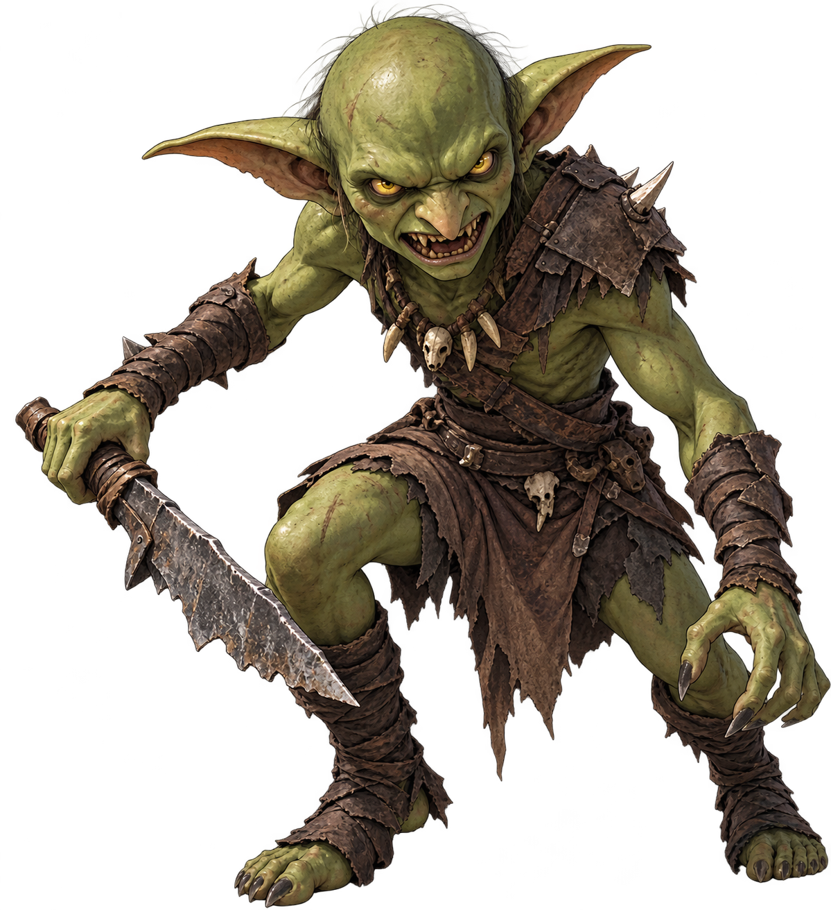
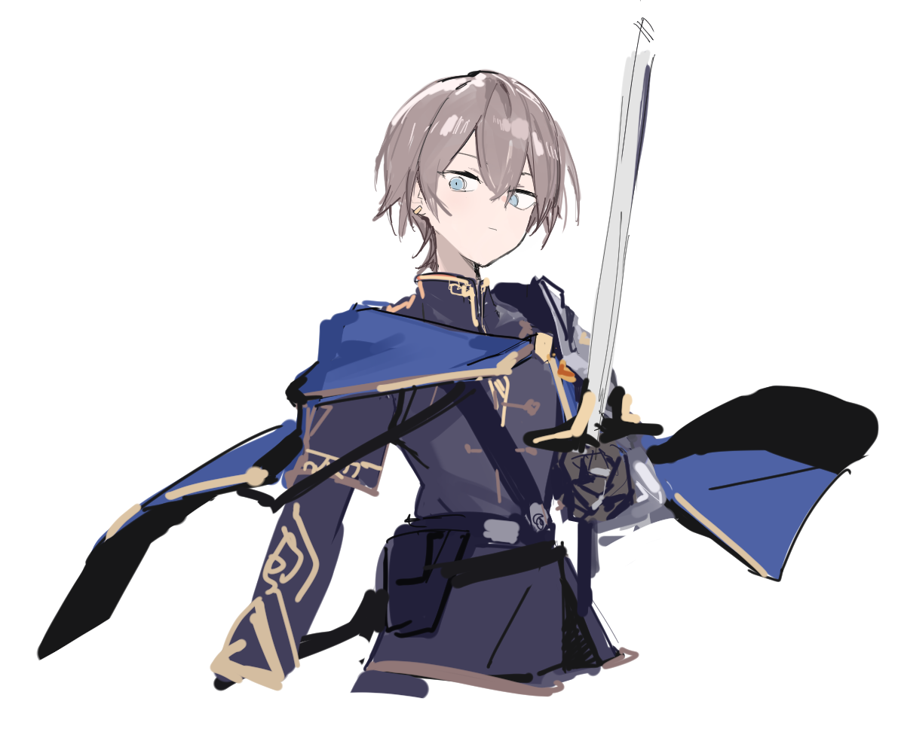
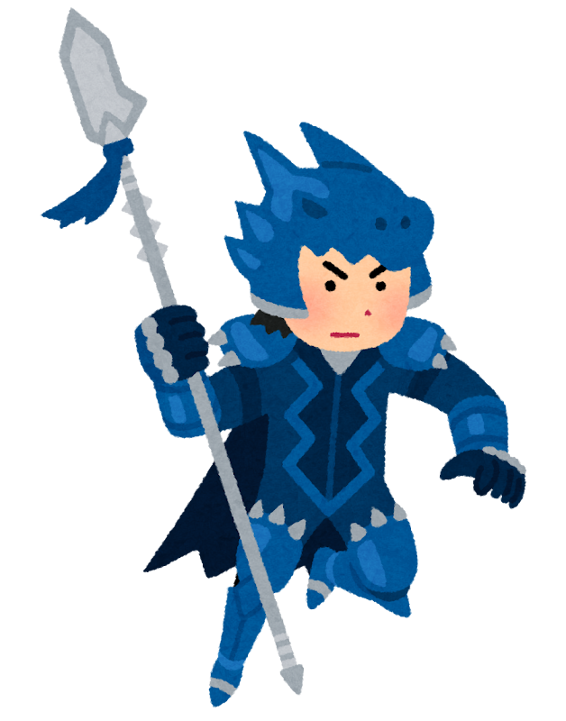
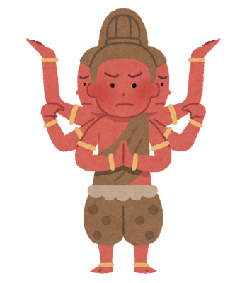
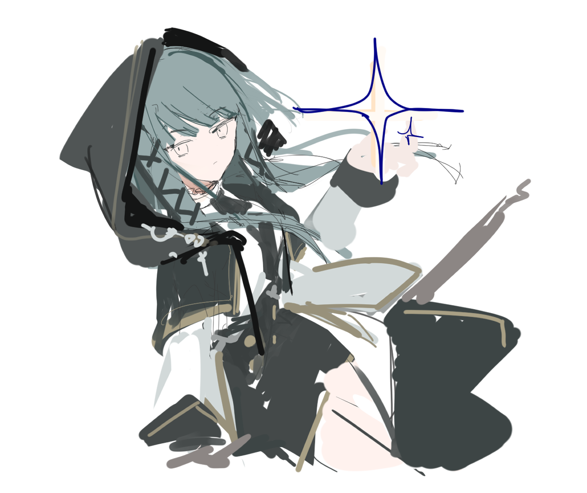
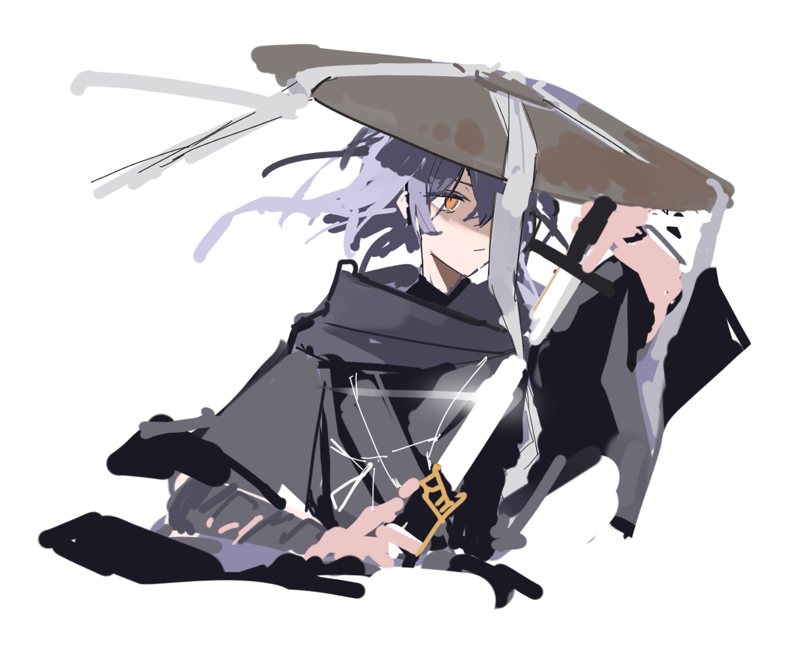

迷宮探索
3D視点の探索と地図を活用した迷宮攻略。危険を見極めながら、未知の道を進もう。
STORY
樹海から始まる、小さな冒険。
仲間たちとパーティを組み、未知の階層を探索する。
行く手を阻む魔物と、迷宮に潜む強大な敵。
君の選択と戦略が、旅の行方を変えていく。
GAME SYSTEM
3D視点の探索と地図を活用した迷宮攻略。危険を見極めながら、未知の道を進もう。
攻撃、スキル、防御、道具、ユニオンスキル。敵の特徴を読み、仲間と連携して勝利をつかもう。
職業の特徴を生かしたパーティ編成。装備とスキルを整え、自分だけの戦い方を探そう。
MONSTERS & BATTLES

MONSTER ART敵の弱点、耐性、行動パターンを見極めよう。仲間の役割を活かし、強敵への突破口を切り拓け。
ゲーム本体で参照されているモンスター画像を使用しています。
CHARACTERS

CHARACTER ART雷を操り、仲間と迷宮を切り拓く冒険者。

盾と防御技で仲間を守る前衛。
回復と蘇生でパーティを支える。

自らの体力を代償に攻め込む戦士。

炎・氷・雷の魔法を使い分ける。

鋭い斬撃と防御を貫く技を放つ。
キャラクター画像はゲームのdevelopment内の参照パスを使用しています。職業や性能は開発中の内容です。
GAMEPLAY PREVIEW
立体的な探索画面と地図を活用して、危険な迷宮を進む。
敵の弱点や行動を見極め、スキルと連携で勝利を目指す。
上記は公式サイト向けに作成したコンセプト画像です。実際のゲーム画面とは異なります。
THE WORLD
緑に包まれた、冒険の出発点。
水と氷に彩られた、冷たい世界。
文明の残骸を植物が覆う、忘れられた都市。
溶岩と鉱石が輝く、ドラゴンの領域。
古代文明の痕跡と、魔王の待つ場所。
※開発中の内容を含みます。仕様・表現は変更される場合があります。
GAME INFORMATION
タイトル：コタマのぼうけん
ジャンル：迷宮探索・ターン制ファンタジーRPG
プラットフォーム：ブラウザ / 開発中
公開・配布情報は準備中です。